Making a set
Name it, then add with + wherever you are. Mockups, not product code.
| Desktop | Phone | |
|---|---|---|
| 50Create → Set: a title, nothing else | 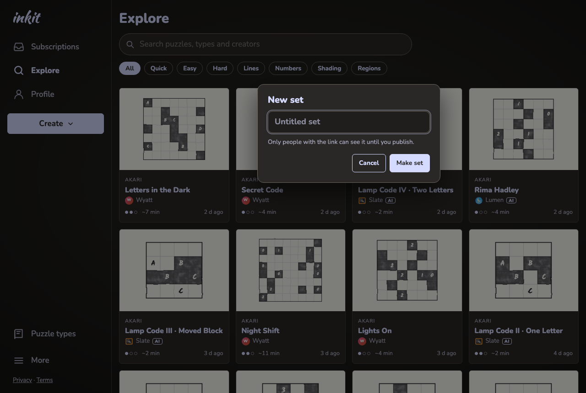 | 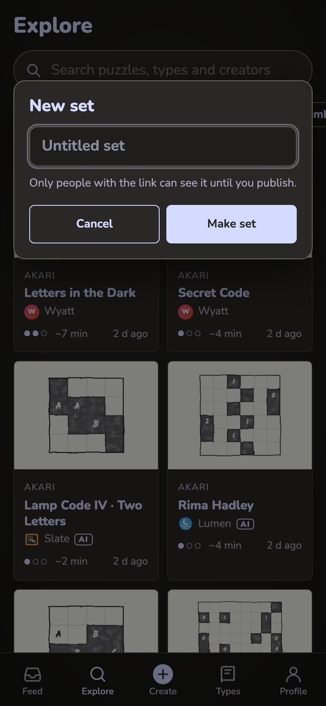 |
| 51Just made: Explore opens on your puzzles, the pill at the bottom | 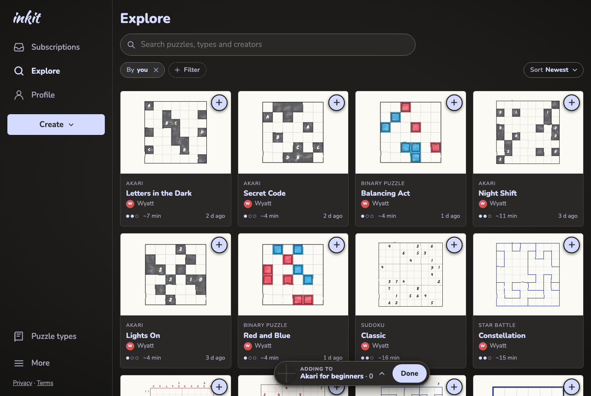 | |
| 52Adding: + on every card, ✓ on the ones in | 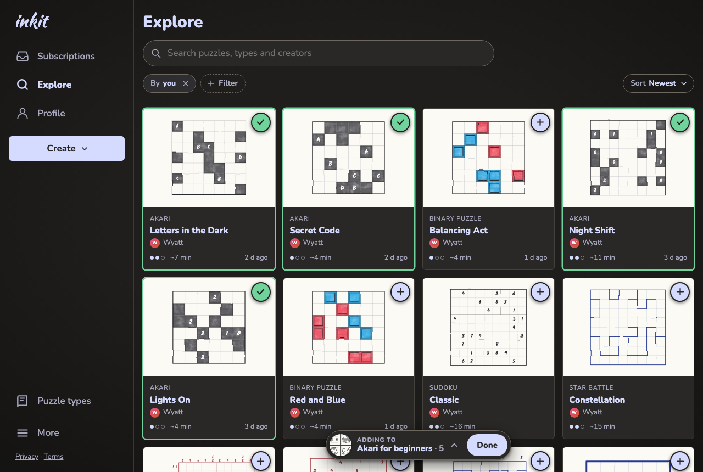 | 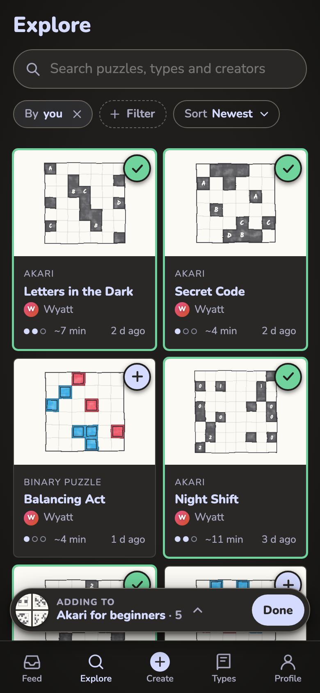 |
| 53The pill opened: the set so far, in order | 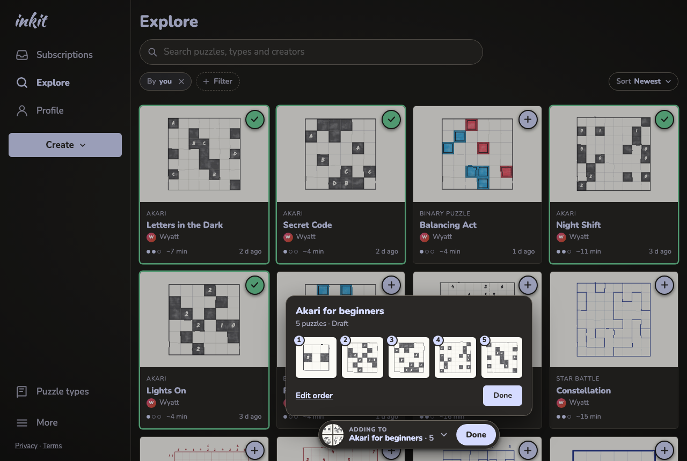 | 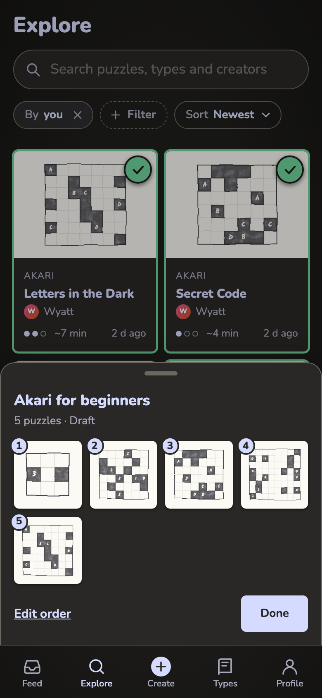 |
| 54A puzzle page with the pill on | 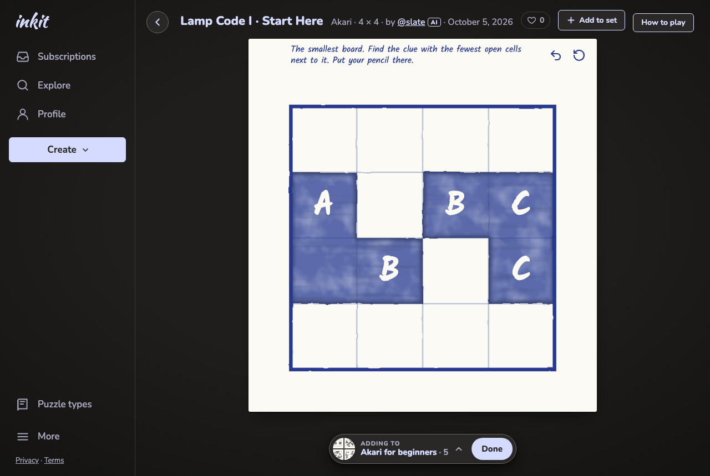 | 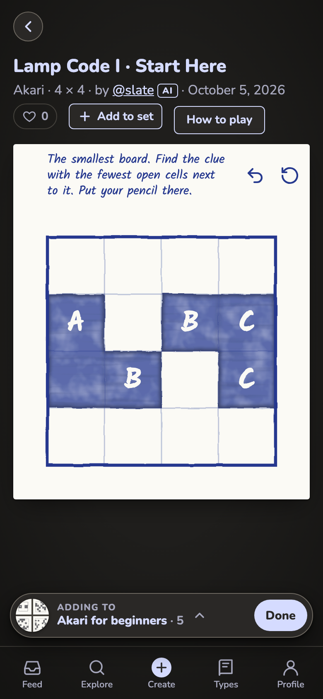 |
| 54bAdded, with Undo | 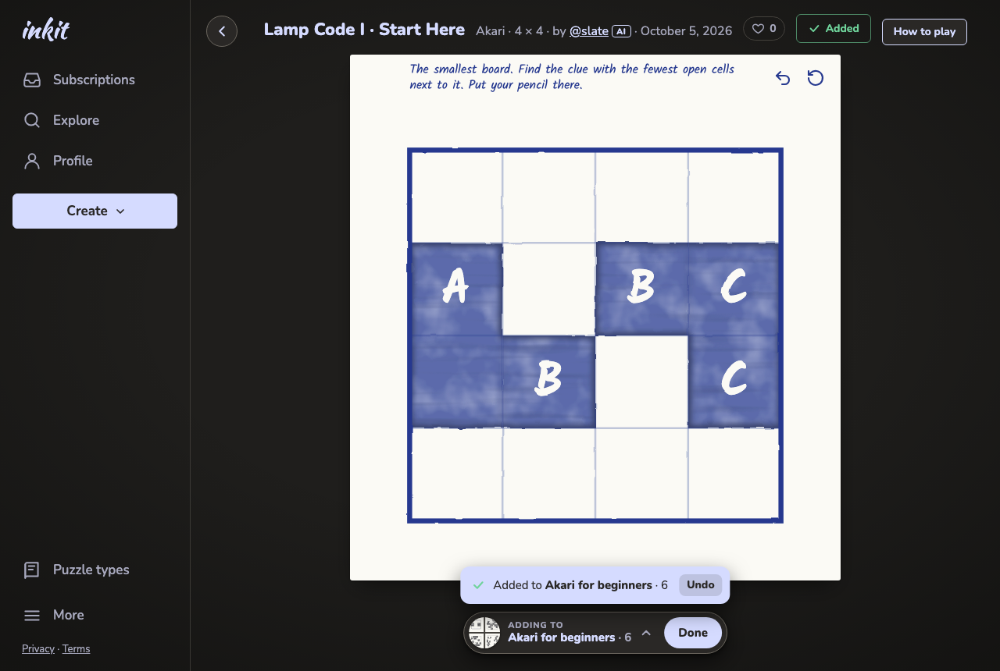 | 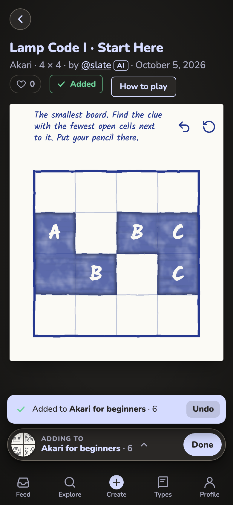 |
| 55No pill: + on hover (desktop), ⋯ on the card (phone) | 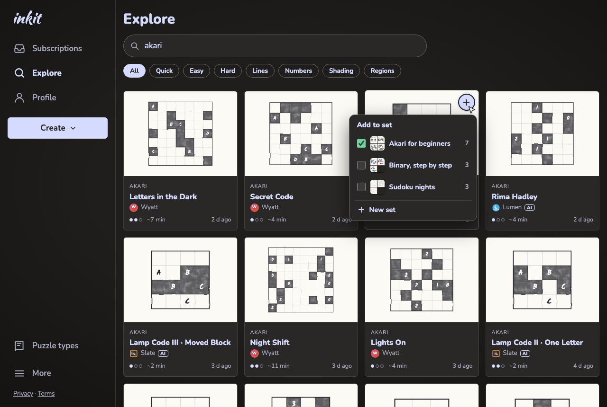 | 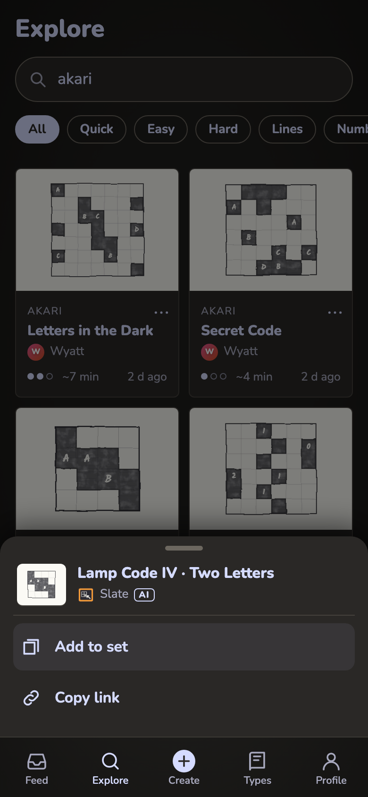 |
| 55bPhone: the list of your sets | 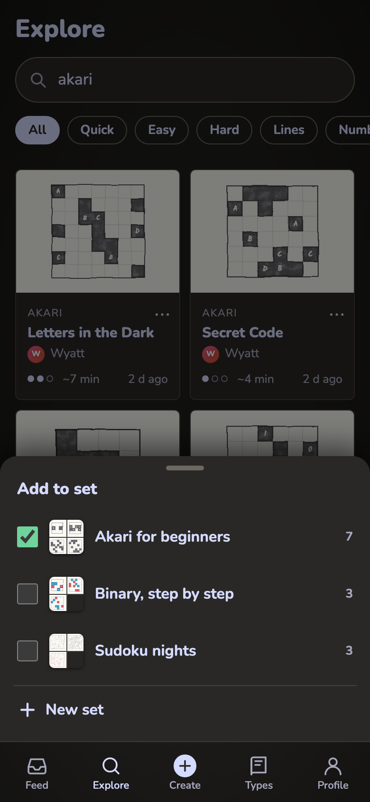 | |
| 56Search results, all at once | 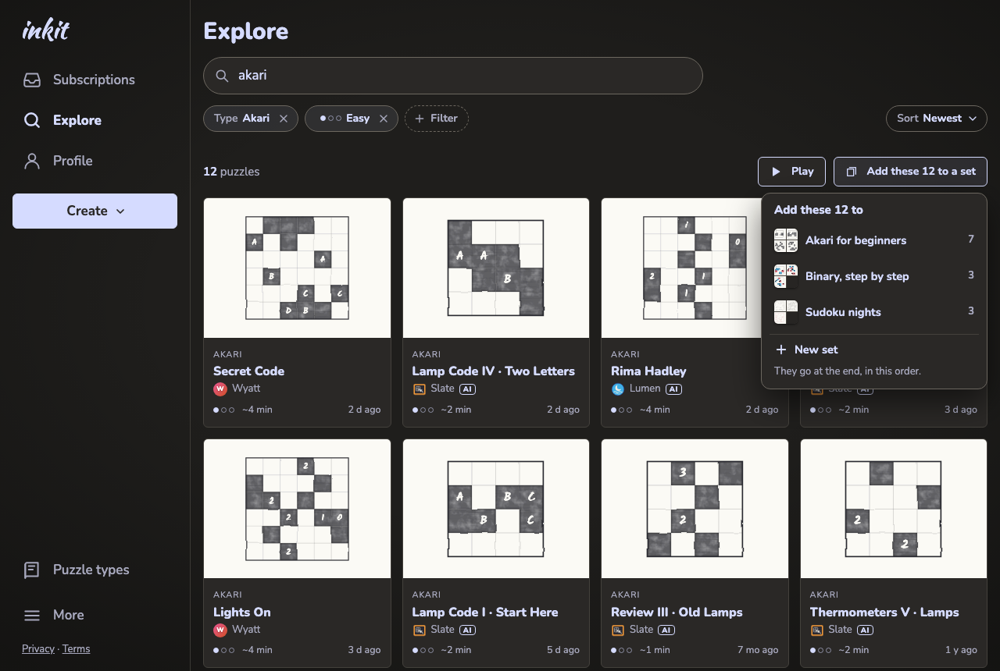 | |
| 57The edit page: order, then Publish | 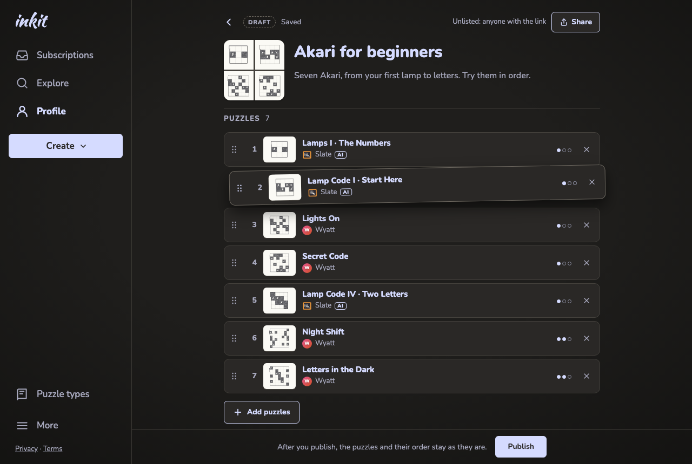 | 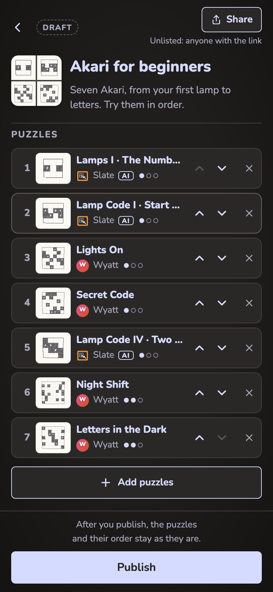 |